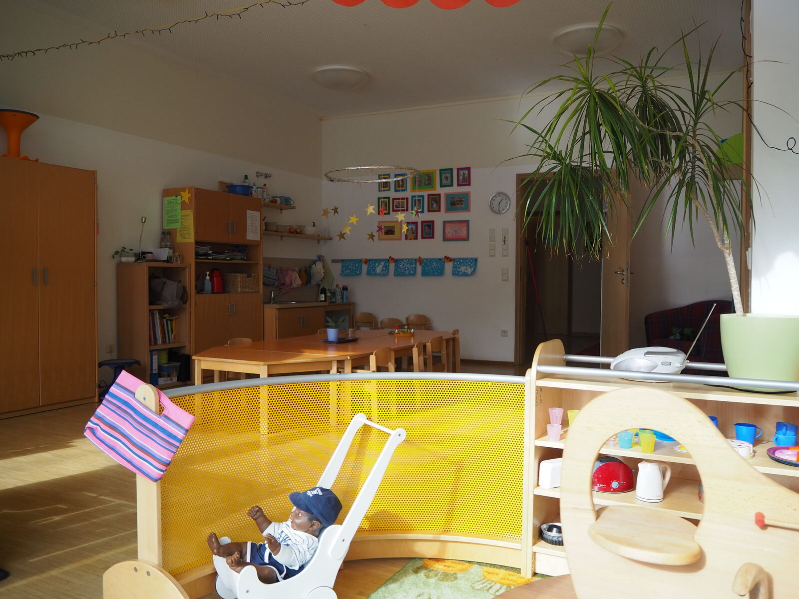

Kath. Kinder- und Jugendhort Grombühl
Weil Qualität zählt! Eine vielfältige, große Kita für Kinder von 11 Monaten bis 16 Jahren – mit Herz, Zeit und viel Platz zum Entdecken.


Ein Haus für jedes Alter
Mit Krippe, Kindergarten und Hort unter einem Dach können wir Kindern und Familien ein einheitliches Konzept und einen nahtlosen Wechsel gewährleisten.

ab 11 MonatenKinderkrippe
Sonnen- und Sternengruppe: liebevolle Betreuung für die Kleinsten – vom 11. Monat bis zum August des Jahres, in dem sie 3 Jahre alt werden.
Mehr erfahren 3 Jahre bis Einschulung
3 Jahre bis EinschulungKindergarten
Bären-, Bienen- und Spatzengruppe: Projektarbeit, Englisch, Vorkurs Deutsch und viel Freispiel im großen Garten.
Mehr erfahren ab der Einschulung
ab der EinschulungKinderhort
Für alle Schulformen – mit begleiteten, korrigierten Hausaufgaben, Freitagsausflügen und Ferienbetreuung bis 18:00 Uhr.
Mehr erfahren
Schön, dass Sie da sind!
Herzlich Willkommen auf den Seiten des Kath. Kinder- und Jugendhortes Grombühl. Ich freue mich sehr, dass Sie sich für unsere Kita interessieren. Wir wollen Ihnen mit unserer Homepage eine gute erste Orientierung geben und Ihnen weiterhelfen, wenn Sie nach einer passenden Kita suchen oder sich zunächst nur ein Bild von uns machen möchten.
Sicher fällt Ihnen gleich auf, dass wir eine vielfältige und große Kita sind, mit einem breit gefächerten Altersspektrum, das sich an Kinder von 11 Monaten bis hin zu 16 Jahren richtet. Vielfalt und Individualität sind uns wichtig und das praktizieren wir hier täglich in unserer Pädagogik.
Wir achten auf die Stärken jedes Kindes und wollen allen Kindern – ob Krippen-, Kindergarten- oder Hortkindern – vielfältige Möglichkeiten bieten, diese Stärken in sich zu entdecken und immer weiter zu entwickeln. Dazu braucht es vielfältige Angebote, Projekte und ein ausgewogenes Maß an Begleitung und Freiheit. Daran arbeiten wir täglich!
Gerne informieren wir Sie, wenn Sie mehr wissen möchten. Wir freuen uns auf Sie und Ihr Kind.
Mehr als Betreuung
Lange Öffnungszeiten, eine hauseigene Küche und viel Raum zum Spielen, Lernen und Entspannen – mitten in der Stadt.

Termine & Downloads
Schließtage 2026/2027
In allen Abteilungen des Hauses haben wir an maximal 30 gleichen Tagen im Jahr geschlossen.
| Wann? | Wir haben geöffnet bis … | Erster Schließtag | Letzter Schließtag | Wir öffnen wieder am … | Schließtage |
|---|---|---|---|---|---|
| Herbstferien | 30.10.2026 | 02.11.2026 | 03.11.2026 | 04.11.2026 | 02 |
| Weihnachten | 23.12.2026 | 24.12.2026 | 08.01.2027 | 11.01.2027 | 07 |
| Fasching | 05.02.2027 | 08.02.2027(Rosenmontag) | 09.02.2027(Faschingsdienstag) | 10.02.2027 | 02 |
| Ostern | 24.03.2027 | 25.03.2027 | 30.03.2027 | 31.03.2027 | 02 |
| Pfingsten | 14.05.2027 | 18.05.2027 | 18.05.2027 | 19.05.2027 | 01 |
| Pfingsten | 26.05.2027 | 28.05.2027 | 28.05.2027 | 31.05.2027 | 01 |
| Sommerferien | 06.08.2027 | 09.08.2027 | 27.08.2027 | 30.08.2027 | 15 |
| Schließtage gesamt | 30 | ||||
Damit Sie rechtzeitig Ihre Urlaubspläne schmieden können: Kinderkrippe, Kindergarten und Kinderhort haben die gleichen Schließtage. Ferienplan als PDF herunterladen · Original-Aushang ansehen

Lernen Sie uns kennen
Sie haben Fragen zu Krippe, Kindergarten oder Hort? Rufen Sie uns an oder schreiben Sie uns eine E-Mail.